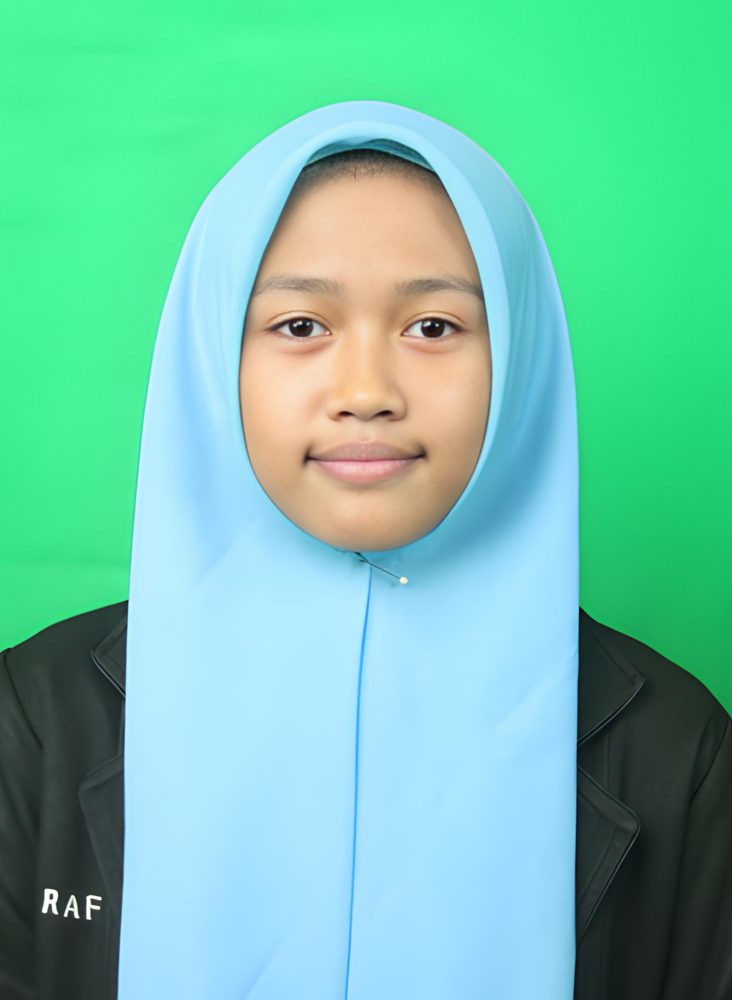
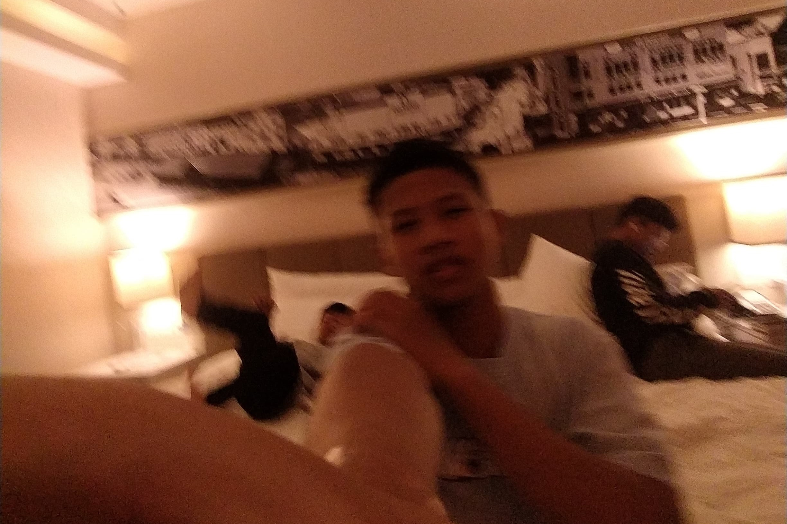
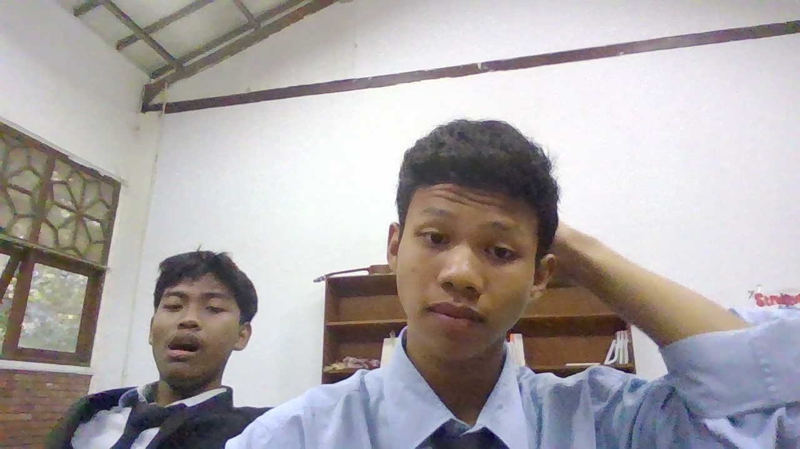

Hayolohhh tebak ini foto siapa
Jas nya ada tulisan RAF
maap maap, gk lagi lagi deh insyallah

untuk ajeng maap ya surat nya lewat web aja, soal nya tulisan gw kayak mirip ceker ayam gitu
kalo mau dm gwsebelum itu di sarankan pake lp karna gw ngoding dan view nya di lp, kalo pake hp gk papasihh,. sebenarnya gw ngomong jutek mungkin karna kita jarang ngobrol gitu, jujur gw juga kalo mau nyapa tuh kayak malu gitu dahh, padahal kan kewajiban muslim atas muslim lainnya menjawab salam gw pengen salam ke lu tapi akhhh maluuu
jadi kalo gw nyapa jawab yaaa, jawabnya harus extrovert gitu lah jangan sok introvert luu, kayak kemarem di rm opmaz gw mau nyapa tapi lu kayak introvert gitu jadi malu kann

mungkin agak random foto foto yang gw taro tapi izinn yaahh.

Jas nya ada tulisan RAF
maap maap, gk lagi lagi deh insyallah

jujur udh ngantuk juga nih udh malemm, tapi sabarr lagi ngeluarin pikiran semangatt!!
.jpg)
BTW vidio colab membasuh tadi enak juga yakkk, emang gitar nya kren sihhhh, sama yang nyanyi juga mantap nyakk